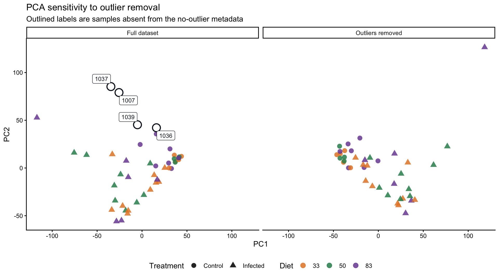
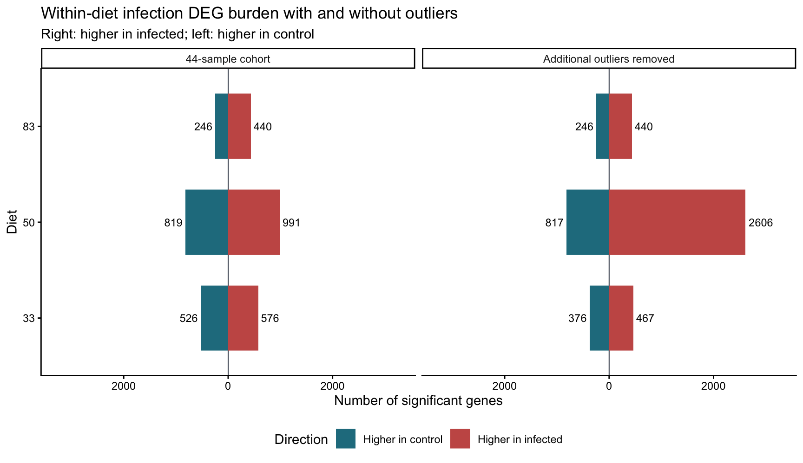
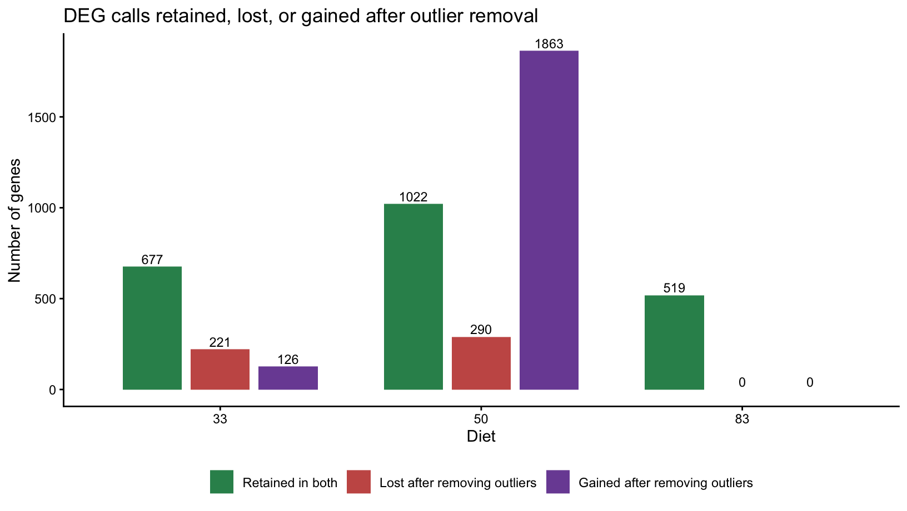
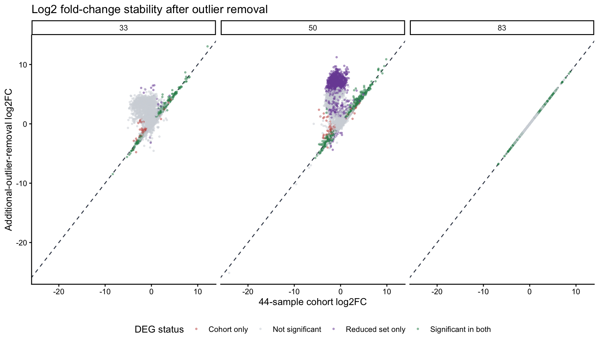
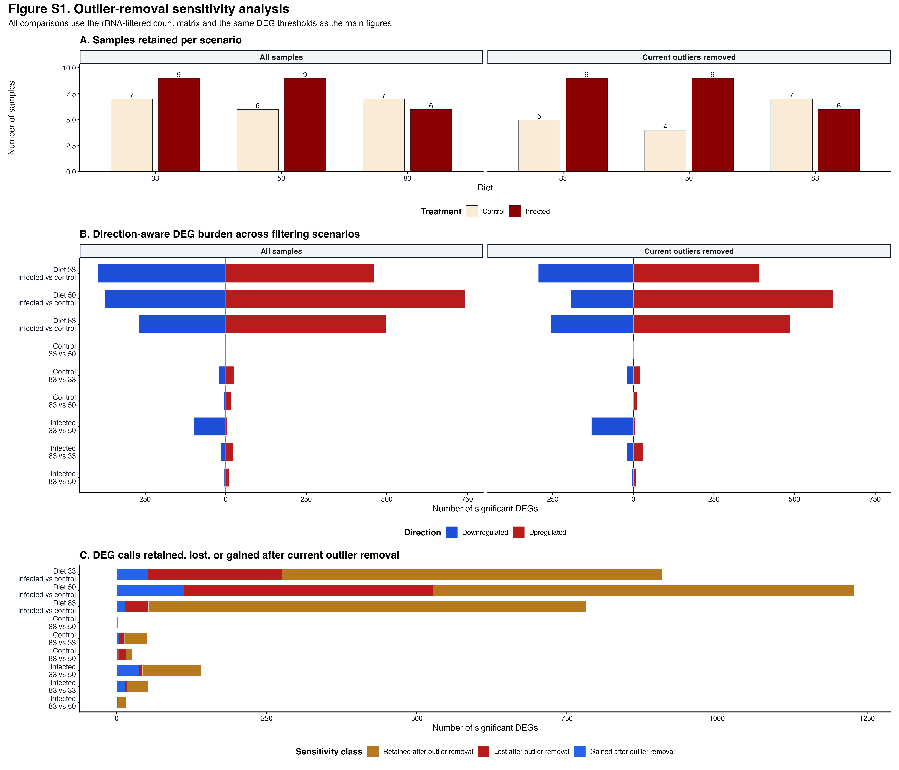

Last updated: 2026-08-10
Checks: 7 0
Knit directory:
gregaria-diet-infection-interaction/
This reproducible R Markdown analysis was created with workflowr (version 1.7.2). The Checks tab describes the reproducibility checks that were applied when the results were created. The Past versions tab lists the development history.
Great! Since the R Markdown file has been committed to the Git repository, you know the exact version of the code that produced these results.
Great job! The global environment was empty. Objects defined in the global environment can affect the analysis in your R Markdown file in unknown ways. For reproduciblity it’s best to always run the code in an empty environment.
The command set.seed(20260427) was run prior to running
the code in the R Markdown file. Setting a seed ensures that any results
that rely on randomness, e.g. subsampling or permutations, are
reproducible.
Great job! Recording the operating system, R version, and package versions is critical for reproducibility.
Nice! There were no cached chunks for this analysis, so you can be confident that you successfully produced the results during this run.
Great job! Using relative paths to the files within your workflowr project makes it easier to run your code on other machines.
Great! You are using Git for version control. Tracking code development and connecting the code version to the results is critical for reproducibility.
The results in this page were generated with repository version bdea9ec. See the Past versions tab to see a history of the changes made to the R Markdown and HTML files.
Note that you need to be careful to ensure that all relevant files for
the analysis have been committed to Git prior to generating the results
(you can use wflow_publish or
wflow_git_commit). workflowr only checks the R Markdown
file, but you know if there are other scripts or data files that it
depends on. Below is the status of the Git repository when the results
were generated:
Ignored files:
Ignored: .DS_Store
Ignored: analysis/.Rhistory
Ignored: analysis/output/
Ignored: code/R_timecourse_reference/
Ignored: code/scripts/__pycache__/
Ignored: data/.DS_Store
Ignored: data/raw_read_counts/DESeq2_output/overlap_DEGs/
Ignored: data/reference/
Ignored: manuscript/revisions/.DS_Store
Ignored: output/.DS_Store
Ignored: output/archive/rmd_runs_20260809_navigation_cleanup/curated-target-gene-figure_20260808-001351/
Ignored: output/rmd_runs/
Ignored: output/runs/
Ignored: outputs/.DS_Store
Ignored: scripts/.RData
Ignored: scripts/.Rhistory
Ignored: scripts/manuscript/__pycache__/
Untracked files:
Untracked: manuscript/revisions/20260810_methods_results_latest_analysis_audit/
Untracked: output/archive/rmd_runs_20260809_navigation_cleanup/exon-only-deseq2-analysis_20260808-020715/placed_unplaced_all_deseq2_results.csv
Untracked: output/archive/rmd_runs_20260809_navigation_cleanup/exon-only-deseq2-analysis_20260808-022116/placed_unplaced_all_deseq2_results.csv
Untracked: output/archive/rmd_runs_20260809_navigation_cleanup/placed-unplaced-scaffold-analysis_20260806-010555/placed_unplaced_all_deseq2_results.csv
Untracked: scripts/manuscript/build_methods_results_audit_20260810.py
Unstaged changes:
Modified: analysis/03-count-qc-exploration.Rmd
Note that any generated files, e.g. HTML, png, CSS, etc., are not included in this status report because it is ok for generated content to have uncommitted changes.
These are the previous versions of the repository in which changes were
made to the R Markdown
(analysis/11-outlier-sensitivity.Rmd) and HTML
(docs/11-outlier-sensitivity.html) files. If you’ve
configured a remote Git repository (see ?wflow_git_remote),
click on the hyperlinks in the table below to view the files as they
were in that past version.
| File | Version | Author | Date | Message |
|---|---|---|---|---|
| Rmd | 20984df | Maeva TECHER | 2026-08-10 | remove 1044 as bad mapping |
| html | 20984df | Maeva TECHER | 2026-08-10 | remove 1044 as bad mapping |
| Rmd | 8b8101c | Maeva TECHER | 2026-08-09 | fixing sample misassignement and missing library |
| html | 8b8101c | Maeva TECHER | 2026-08-09 | fixing sample misassignement and missing library |
| html | 0942a37 | Maeva TECHER | 2026-08-07 | update publication |
| Rmd | 9779d0d | Maeva TECHER | 2026-08-06 | reformat the pages |
| html | 9779d0d | Maeva TECHER | 2026-08-06 | reformat the pages |
| Rmd | 5ebe940 | Maeva TECHER | 2026-08-06 | changes analysis |
| html | 5ebe940 | Maeva TECHER | 2026-08-06 | changes analysis |
| html | 1b24ec2 | Maeva TECHER | 2026-07-16 | adding phase related changes |
| Rmd | bceb79b | Maeva TECHER | 2026-07-04 | update outliers removal |
| html | bceb79b | Maeva TECHER | 2026-07-04 | update outliers removal |
| html | fb64139 | Maeva TECHER | 2026-07-03 | fixed the repo broken link |
| Rmd | 4de8698 | Maeva TECHER | 2026-07-03 | update html |
| html | 4de8698 | Maeva TECHER | 2026-07-03 | update html |
Step 1 - Define archived scenarios
Start from the 44-sample cohort and define the historical reduced set only as a check.
Step 2 - Repeat contrasts
Apply the same transcript-plus-exon counts and DEG thresholds to both scenarios.
Step 3 - Assess stability
Compare PCA, DEG burden, retained calls, and fold changes.
The main analysis pages use the frozen 44-sample cohort, which always excludes 1044. This archived sensitivity page reruns the same within-diet infection contrasts with and without the older candidate-outlier set so we can see whether those additional exclusions change the biological patterns.
The no-outlier analysis is treated as a sensitivity analysis, not as a replacement for the main analysis. This is important because the removed samples are all controls from diet 33 or diet 50, so removing them changes group balance as well as expression structure.
knitr::opts_chunk$set(message = FALSE, warning = FALSE)
required <- c("DESeq2", "ggplot2", "dplyr", "tidyr", "ggrepel", "DT",
"SummarizedExperiment")
missing <- required[!vapply(required, requireNamespace, logical(1), quietly = TRUE)]
if (length(missing) > 0) {
stop("Install required packages before knitting: ", paste(missing, collapse = ", "))
}
project_dir <- normalizePath(".", mustWork = TRUE)
run_stamp <- format(Sys.time(), "%Y%m%d-%H%M%S")
out_dir <- file.path(project_dir, "output", "rmd_runs",
paste(params$output_tag, run_stamp, sep = "_"))
dir.create(out_dir, recursive = TRUE, showWarnings = FALSE)
diet_colors <- c("33" = "#E6862E", "50" = "#2F8F5B", "83" = "#7B4FA3")
treatment_colors <- c("Control" = "#7B8794", "Infected" = "#C85A54")
direction_colors <- c("Higher in infected" = "#C85A54",
"Higher in control" = "#237C8E")
comparison_colors <- c("Retained in both" = "#2F8F5B",
"Lost after removing outliers" = "#C85A54",
"Gained after removing outliers" = "#7B4FA3")
metadata_full_file <- file.path(project_dir, params$metadata_full_file)
metadata_no_outliers_file <- file.path(project_dir, params$metadata_no_outliers_file)
counts_file <- file.path(project_dir, params$counts_file)read_metadata <- function(path) {
tab <- read.delim(path, check.names = FALSE)
tab <- tab[, !is.na(names(tab)) & nzchar(names(tab)), drop = FALSE]
tab$label <- as.character(tab$label)
tab$Diet <- factor(tab$Diet, levels = c("33", "50", "83"))
tab$Treatment <- relevel(factor(tab$Treatment), ref = "Control")
tab
}
metadata_full <- read_metadata(metadata_full_file)
metadata_no_outliers <- read_metadata(metadata_no_outliers_file) |>
dplyr::filter(label != params$mandatory_exclusion)
removed_samples <- metadata_full |>
dplyr::filter(!label %in% metadata_no_outliers$label)
knitr::kable(removed_samples, caption = "Samples removed in no-outlier metadata")| label | files | Sex | Treatment | Diet | Hour_Group_Post_Innoculation |
|---|---|---|---|---|---|
| 1007 | mehreen_1007_MERGE_counts.txt | Female | Control | 50 | 96 |
| 1036 | mehreen_1036_MERGE_counts.txt | Female | Control | 33 | 96 |
| 1037 | mehreen_1037_MERGE_counts.txt | Female | Control | 50 | 96 |
| 1039 | mehreen_1039_MERGE_counts.txt | Female | Control | 33 | 96 |
design_table <- dplyr::bind_rows(
metadata_full |> dplyr::mutate(dataset = "44-sample cohort"),
metadata_no_outliers |> dplyr::mutate(dataset = "Additional outliers removed")
) |>
dplyr::count(dataset, Diet, Treatment, name = "n_samples")
knitr::kable(design_table, caption = "Sample counts by diet and treatment")| dataset | Diet | Treatment | n_samples |
|---|---|---|---|
| 44-sample cohort | 33 | Control | 7 |
| 44-sample cohort | 33 | Infected | 10 |
| 44-sample cohort | 50 | Control | 6 |
| 44-sample cohort | 50 | Infected | 9 |
| 44-sample cohort | 83 | Control | 7 |
| 44-sample cohort | 83 | Infected | 5 |
| Additional outliers removed | 33 | Control | 5 |
| Additional outliers removed | 33 | Infected | 10 |
| Additional outliers removed | 50 | Control | 4 |
| Additional outliers removed | 50 | Infected | 9 |
| Additional outliers removed | 83 | Control | 7 |
| Additional outliers removed | 83 | Infected | 5 |
write.csv(removed_samples, file.path(out_dir, "removed_samples.csv"),
row.names = FALSE)
write.csv(design_table, file.path(out_dir, "sample_counts_by_group.csv"),
row.names = FALSE)Each dataset is analyzed with the same rule used on the main
within-diet page: inside each diet, fit ~ Treatment and
contrast infected versus control. A gene is called significant when
padj < alpha and
abs(log2FoldChange) >= lfc_threshold.
counts_raw <- read.delim(counts_file, check.names = FALSE)
counts_all <- as.matrix(counts_raw[, -1])
rownames(counts_all) <- counts_raw[[1]]
storage.mode(counts_all) <- "integer"
count_labels <- sub("_MERGE$", "", sub("^mehreen_", "", colnames(counts_all)))
colnames(counts_all) <- count_labels
run_dataset <- function(metadata, dataset_label) {
metadata <- metadata[match(count_labels[count_labels %in% metadata$label],
metadata$label), ]
metadata <- metadata[!is.na(metadata$label), ]
rownames(metadata) <- metadata$label
counts <- counts_all[, metadata$label, drop = FALSE]
keep <- rowSums(counts) >= params$min_total_count
dds_vst <- DESeq2::DESeqDataSetFromMatrix(
countData = counts[keep, ],
colData = metadata,
design = ~ Diet + Treatment
)
vsd <- DESeq2::vst(dds_vst, blind = TRUE)
vst_mat <- SummarizedExperiment::assay(vsd)
pca <- prcomp(t(vst_mat), scale. = FALSE)
percent_var <- round(100 * (pca$sdev^2 / sum(pca$sdev^2)), 1)
pca_scores <- data.frame(
dataset = dataset_label,
label = rownames(pca$x),
PC1 = pca$x[, "PC1"],
PC2 = pca$x[, "PC2"],
Diet = metadata$Diet,
Treatment = metadata$Treatment,
percent_PC1 = percent_var[1],
percent_PC2 = percent_var[2],
stringsAsFactors = FALSE
)
result_tables <- list()
for (diet_level in levels(droplevels(metadata$Diet))) {
sample_keep <- metadata$Diet == diet_level
metadata_sub <- droplevels(metadata[sample_keep, ])
counts_sub <- counts[, sample_keep, drop = FALSE]
keep_sub <- rowSums(counts_sub) >= params$min_total_count
dds <- DESeq2::DESeqDataSetFromMatrix(
countData = counts_sub[keep_sub, ],
colData = metadata_sub,
design = ~ Treatment
)
dds <- DESeq2::DESeq(dds)
res <- DESeq2::results(dds, contrast = c("Treatment", "Infected", "Control"))
res_df <- as.data.frame(res)
res_df$gene_id <- rownames(res_df)
res_df$diet <- diet_level
res_df$dataset <- dataset_label
res_df$significant <- !is.na(res_df$padj) &
res_df$padj < params$alpha &
abs(res_df$log2FoldChange) >= params$lfc_threshold
res_df$direction <- ifelse(res_df$log2FoldChange > 0,
"Higher in infected",
"Higher in control")
result_tables[[diet_level]] <- res_df
}
list(
pca_scores = pca_scores,
results = dplyr::bind_rows(result_tables)
)
}
full_analysis <- run_dataset(metadata_full, "44-sample cohort")
no_outlier_analysis <- run_dataset(metadata_no_outliers, "Additional outliers removed")
pca_scores_all <- dplyr::bind_rows(full_analysis$pca_scores,
no_outlier_analysis$pca_scores)
contrast_results <- dplyr::bind_rows(full_analysis$results,
no_outlier_analysis$results)
write.csv(pca_scores_all, file.path(out_dir, "pca_scores_full_vs_no_outliers.csv"),
row.names = FALSE)
write.csv(contrast_results,
file.path(out_dir, "within_diet_results_full_vs_no_outliers.csv"),
row.names = FALSE)The PCA is not a differential-expression test. It shows whether removing the outlier samples changes the broad VST expression geometry before we interpret gene-level contrasts.
pca_scores_all$outlier_removed <- pca_scores_all$label %in% removed_samples$label
p_pca_sensitivity <- ggplot2::ggplot(
pca_scores_all,
ggplot2::aes(PC1, PC2, color = Diet, shape = Treatment)
) +
ggplot2::geom_point(size = 3, alpha = 0.86) +
ggplot2::geom_point(
data = pca_scores_all[pca_scores_all$outlier_removed, ],
shape = 21,
fill = "white",
color = "#111827",
stroke = 1.1,
size = 4.6
) +
ggrepel::geom_label_repel(
data = pca_scores_all[pca_scores_all$outlier_removed, ],
ggplot2::aes(x = PC1, y = PC2, label = label),
color = "#111827",
fill = "white",
size = 3,
label.size = 0.18,
inherit.aes = FALSE
) +
ggplot2::facet_wrap(~ dataset) +
ggplot2::scale_color_manual(values = diet_colors) +
ggplot2::theme_classic() +
ggplot2::theme(legend.position = "bottom") +
ggplot2::labs(
title = "PCA sensitivity to outlier removal",
subtitle = "Outlined labels are samples absent from the no-outlier metadata",
x = "PC1",
y = "PC2",
color = "Diet",
shape = "Treatment"
)
p_pca_sensitivity
ggplot2::ggsave(file.path(out_dir, "pca_full_vs_no_outliers.png"),
p_pca_sensitivity, width = 10, height = 5.6, dpi = 300)burden <- contrast_results |>
dplyr::filter(significant, !is.na(log2FoldChange)) |>
dplyr::count(dataset, diet, direction, name = "n_degs") |>
dplyr::mutate(
diet = factor(diet, levels = c("33", "50", "83")),
signed_n = ifelse(direction == "Higher in infected", n_degs, -n_degs)
)
max_burden <- max(abs(burden$signed_n), 1)
p_burden <- ggplot2::ggplot(
burden,
ggplot2::aes(x = signed_n, y = diet, fill = direction)
) +
ggplot2::geom_vline(xintercept = 0, color = "#374151", linewidth = 0.35) +
ggplot2::geom_col(width = 0.68) +
ggplot2::geom_text(
ggplot2::aes(label = n_degs,
hjust = ifelse(signed_n > 0, -0.15, 1.15)),
size = 3.1
) +
ggplot2::facet_wrap(~ dataset) +
ggplot2::scale_x_continuous(labels = abs,
limits = c(-1.25 * max_burden,
1.25 * max_burden)) +
ggplot2::scale_fill_manual(values = direction_colors) +
ggplot2::theme_classic() +
ggplot2::theme(legend.position = "bottom") +
ggplot2::labs(
title = "Within-diet infection DEG burden with and without outliers",
subtitle = "Right: higher in infected; left: higher in control",
x = "Number of significant genes",
y = "Diet",
fill = "Direction"
)
p_burden
ggplot2::ggsave(file.path(out_dir, "deg_burden_full_vs_no_outliers.png"),
p_burden, width = 9, height = 5.2, dpi = 300)
write.csv(burden, file.path(out_dir, "deg_burden_full_vs_no_outliers.csv"),
row.names = FALSE)This plot asks which significant DEG calls are stable after outlier removal. A retained gene is significant in both analyses for that diet. A lost gene is significant only in the full analysis. A gained gene is significant only after removing the outliers.
deg_membership <- contrast_results |>
dplyr::filter(significant) |>
dplyr::distinct(dataset, diet, gene_id)
compare_diet_sets <- function(diet_level) {
full_set <- deg_membership |>
dplyr::filter(dataset == "44-sample cohort", diet == diet_level) |>
dplyr::pull(gene_id)
no_set <- deg_membership |>
dplyr::filter(dataset == "Additional outliers removed", diet == diet_level) |>
dplyr::pull(gene_id)
data.frame(
diet = diet_level,
status = c("Retained in both",
"Lost after removing outliers",
"Gained after removing outliers"),
n_genes = c(length(intersect(full_set, no_set)),
length(setdiff(full_set, no_set)),
length(setdiff(no_set, full_set))),
stringsAsFactors = FALSE
)
}
retention_summary <- dplyr::bind_rows(
lapply(c("33", "50", "83"), compare_diet_sets)
)
retention_summary$diet <- factor(retention_summary$diet, levels = c("33", "50", "83"))
retention_summary$status <- factor(retention_summary$status,
levels = names(comparison_colors))
p_retention <- ggplot2::ggplot(
retention_summary,
ggplot2::aes(x = diet, y = n_genes, fill = status)
) +
ggplot2::geom_col(position = ggplot2::position_dodge(width = 0.78),
width = 0.68) +
ggplot2::geom_text(
ggplot2::aes(label = n_genes),
position = ggplot2::position_dodge(width = 0.78),
vjust = -0.3,
size = 3.1
) +
ggplot2::scale_fill_manual(values = comparison_colors) +
ggplot2::theme_classic() +
ggplot2::theme(legend.position = "bottom") +
ggplot2::labs(
title = "DEG calls retained, lost, or gained after outlier removal",
x = "Diet",
y = "Number of genes",
fill = NULL
)
p_retention
ggplot2::ggsave(file.path(out_dir, "deg_retained_lost_gained.png"),
p_retention, width = 8.5, height = 4.8, dpi = 300)
write.csv(retention_summary, file.path(out_dir, "deg_retained_lost_gained.csv"),
row.names = FALSE)The fold-change comparison checks whether the same genes have similar infected-control effect sizes with and without outlier removal. The key interpretation is the slope and scatter: a tight diagonal means the effect sizes are stable, while broad scatter means the contrast is sensitive to sample inclusion.
lfc_wide <- contrast_results |>
dplyr::select(dataset, diet, gene_id, log2FoldChange, significant) |>
dplyr::mutate(
dataset_key = dplyr::case_when(
dataset == "44-sample cohort" ~ "Analysis_cohort",
dataset == "Additional outliers removed" ~ "Additional_outliers_removed",
TRUE ~ gsub("[^A-Za-z0-9]+", "_", dataset)
)
) |>
dplyr::select(-dataset) |>
tidyr::pivot_wider(
names_from = dataset_key,
values_from = c(log2FoldChange, significant),
names_sep = "__"
) |>
dplyr::mutate(
DEG_status = dplyr::case_when(
significant__Analysis_cohort & significant__Additional_outliers_removed ~ "Significant in both",
significant__Analysis_cohort & !significant__Additional_outliers_removed ~ "Cohort only",
!significant__Analysis_cohort & significant__Additional_outliers_removed ~ "Reduced set only",
TRUE ~ "Not significant"
)
)
lfc_colors <- c("Significant in both" = "#2F8F5B",
"Cohort only" = "#C85A54",
"Reduced set only" = "#7B4FA3",
"Not significant" = "#D1D5DB")
p_lfc <- ggplot2::ggplot(
lfc_wide,
ggplot2::aes(x = log2FoldChange__Analysis_cohort,
y = log2FoldChange__Additional_outliers_removed,
color = DEG_status)
) +
ggplot2::geom_abline(slope = 1, intercept = 0,
linetype = "dashed", color = "#374151") +
ggplot2::geom_point(alpha = 0.45, size = 0.6) +
ggplot2::facet_wrap(~ diet) +
ggplot2::scale_color_manual(values = lfc_colors) +
ggplot2::theme_classic() +
ggplot2::theme(legend.position = "bottom") +
ggplot2::labs(
title = "Log2 fold-change stability after outlier removal",
x = "44-sample cohort log2FC",
y = "Additional-outlier-removal log2FC",
color = "DEG status"
)
p_lfc
ggplot2::ggsave(file.path(out_dir, "log2fc_stability_full_vs_no_outliers.png"),
p_lfc, width = 9.5, height = 5.5, dpi = 300)
write.csv(lfc_wide, file.path(out_dir, "log2fc_stability_full_vs_no_outliers.csv"),
row.names = FALSE)The primary study retains all 44 analysis-cohort samples. Figure S1 summarizes the alternative sample-removal scenarios as a sensitivity analysis rather than a competing primary result.

The publication page contains the matching SVG and source tables.
writeLines(capture.output(sessionInfo()),
file.path(out_dir, "sessionInfo.txt"))
sessionInfo()R version 4.6.0 (2026-04-24)
Platform: aarch64-apple-darwin23
Running under: macOS Tahoe 26.6.1
Matrix products: default
BLAS: /Library/Frameworks/R.framework/Versions/4.6/Resources/lib/libRblas.0.dylib
LAPACK: /Library/Frameworks/R.framework/Versions/4.6/Resources/lib/libRlapack.dylib; LAPACK version 3.12.1
locale:
[1] C.UTF-8/C.UTF-8/C.UTF-8/C/C.UTF-8/C.UTF-8
time zone: Asia/Tokyo
tzcode source: internal
attached base packages:
[1] stats graphics grDevices utils datasets methods base
other attached packages:
[1] workflowr_1.7.2
loaded via a namespace (and not attached):
[1] SummarizedExperiment_1.42.0 gtable_0.3.6
[3] xfun_0.57 bslib_0.10.0
[5] ggplot2_4.0.3 htmlwidgets_1.6.4
[7] ggrepel_0.9.8 processx_3.9.0
[9] Biobase_2.72.0 lattice_0.22-9
[11] callr_3.7.6 vctrs_0.7.3
[13] tools_4.6.0 generics_0.1.4
[15] stats4_4.6.0 parallel_4.6.0
[17] tibble_3.3.1 pkgconfig_2.0.3
[19] Matrix_1.7-5 RColorBrewer_1.1-3
[21] S7_0.2.2 S4Vectors_0.50.1
[23] lifecycle_1.0.5 compiler_4.6.0
[25] farver_2.1.2 stringr_1.6.0
[27] git2r_0.36.2 textshaping_1.0.5
[29] DESeq2_1.52.0 getPass_0.2-4
[31] Seqinfo_1.2.0 codetools_0.2-20
[33] httpuv_1.6.17 htmltools_0.5.9
[35] sass_0.4.10 yaml_2.3.12
[37] tidyr_1.3.2 later_1.4.8
[39] pillar_1.11.1 jquerylib_0.1.4
[41] whisker_0.4.1 DT_0.34.0
[43] BiocParallel_1.46.0 cachem_1.1.0
[45] DelayedArray_0.38.1 abind_1.4-8
[47] locfit_1.5-9.12 tidyselect_1.2.1
[49] digest_0.6.39 stringi_1.8.7
[51] purrr_1.2.2 dplyr_1.2.1
[53] labeling_0.4.3 rprojroot_2.1.1
[55] fastmap_1.2.0 grid_4.6.0
[57] cli_3.6.6 SparseArray_1.12.2
[59] magrittr_2.0.5 S4Arrays_1.12.0
[61] dichromat_2.0-0.1 withr_3.0.2
[63] scales_1.4.0 promises_1.5.0
[65] rmarkdown_2.31 XVector_0.52.0
[67] httr_1.4.8 matrixStats_1.5.0
[69] otel_0.2.0 ragg_1.5.2
[71] evaluate_1.0.5 knitr_1.51
[73] GenomicRanges_1.64.0 IRanges_2.46.0
[75] rlang_1.2.0 Rcpp_1.1.1-1.1
[77] glue_1.8.1 BiocGenerics_0.58.0
[79] rstudioapi_0.18.0 jsonlite_2.0.0
[81] R6_2.6.1 systemfonts_1.3.2
[83] MatrixGenerics_1.24.0 fs_2.1.0
sessionInfo()R version 4.6.0 (2026-04-24)
Platform: aarch64-apple-darwin23
Running under: macOS Tahoe 26.6.1
Matrix products: default
BLAS: /Library/Frameworks/R.framework/Versions/4.6/Resources/lib/libRblas.0.dylib
LAPACK: /Library/Frameworks/R.framework/Versions/4.6/Resources/lib/libRlapack.dylib; LAPACK version 3.12.1
locale:
[1] C.UTF-8/C.UTF-8/C.UTF-8/C/C.UTF-8/C.UTF-8
time zone: Asia/Tokyo
tzcode source: internal
attached base packages:
[1] stats graphics grDevices utils datasets methods base
other attached packages:
[1] workflowr_1.7.2
loaded via a namespace (and not attached):
[1] SummarizedExperiment_1.42.0 gtable_0.3.6
[3] xfun_0.57 bslib_0.10.0
[5] ggplot2_4.0.3 htmlwidgets_1.6.4
[7] ggrepel_0.9.8 processx_3.9.0
[9] Biobase_2.72.0 lattice_0.22-9
[11] callr_3.7.6 vctrs_0.7.3
[13] tools_4.6.0 generics_0.1.4
[15] stats4_4.6.0 parallel_4.6.0
[17] tibble_3.3.1 pkgconfig_2.0.3
[19] Matrix_1.7-5 RColorBrewer_1.1-3
[21] S7_0.2.2 S4Vectors_0.50.1
[23] lifecycle_1.0.5 compiler_4.6.0
[25] farver_2.1.2 stringr_1.6.0
[27] git2r_0.36.2 textshaping_1.0.5
[29] DESeq2_1.52.0 getPass_0.2-4
[31] Seqinfo_1.2.0 codetools_0.2-20
[33] httpuv_1.6.17 htmltools_0.5.9
[35] sass_0.4.10 yaml_2.3.12
[37] tidyr_1.3.2 later_1.4.8
[39] pillar_1.11.1 jquerylib_0.1.4
[41] whisker_0.4.1 DT_0.34.0
[43] BiocParallel_1.46.0 cachem_1.1.0
[45] DelayedArray_0.38.1 abind_1.4-8
[47] locfit_1.5-9.12 tidyselect_1.2.1
[49] digest_0.6.39 stringi_1.8.7
[51] purrr_1.2.2 dplyr_1.2.1
[53] labeling_0.4.3 rprojroot_2.1.1
[55] fastmap_1.2.0 grid_4.6.0
[57] cli_3.6.6 SparseArray_1.12.2
[59] magrittr_2.0.5 S4Arrays_1.12.0
[61] dichromat_2.0-0.1 withr_3.0.2
[63] scales_1.4.0 promises_1.5.0
[65] rmarkdown_2.31 XVector_0.52.0
[67] httr_1.4.8 matrixStats_1.5.0
[69] otel_0.2.0 ragg_1.5.2
[71] evaluate_1.0.5 knitr_1.51
[73] GenomicRanges_1.64.0 IRanges_2.46.0
[75] rlang_1.2.0 Rcpp_1.1.1-1.1
[77] glue_1.8.1 BiocGenerics_0.58.0
[79] rstudioapi_0.18.0 jsonlite_2.0.0
[81] R6_2.6.1 systemfonts_1.3.2
[83] MatrixGenerics_1.24.0 fs_2.1.0